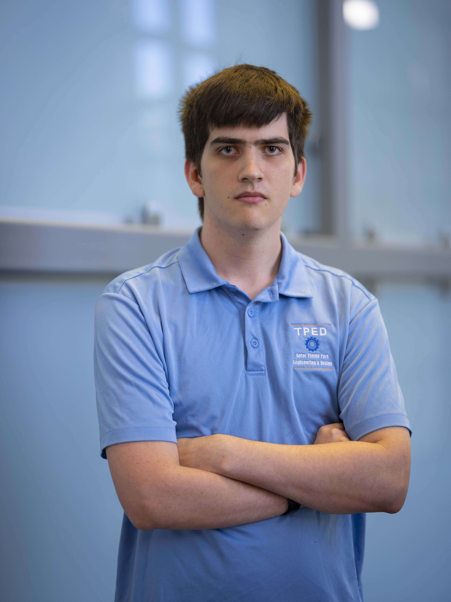

Computer Science @ UF
Ben
Pratt
CS junior at the University of Florida. I build things at the intersection of robotics, machine learning, and human-machine interaction — from animatronic systems to humanoid robot control pipelines.

// University of Florida | Gainesville, FL
3+
Years Interning at IHMC
12+
Projects Built
5+
Languages & Frameworks
Areas of Interest